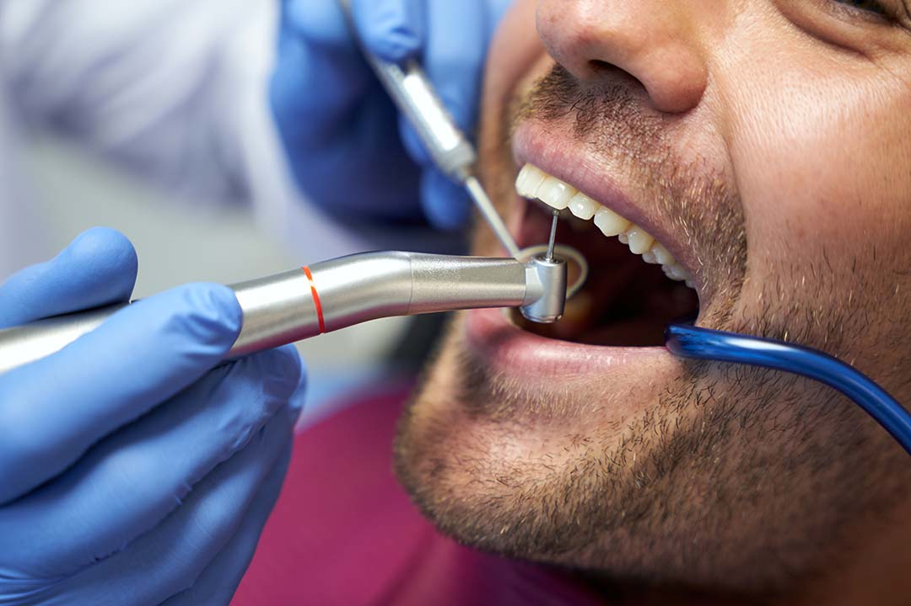

Cuidados com os dentes

O mais adequado é escovar após ingerir qualquer alimento. Caso não seja possível, pelo menos, 3 vezes ao dia. O acúmulo de bactérias nos dentes pode causar placas e, em alguns casos, até mau hálito. A escovação dentária deve privilegiar todos os lados possíveis dos dentes, incluindo a parte interna. Os especialistas mais cuidadosos recomendam escovar os dentes, passar o fio dental e escovar novamente. Enxague várias vezes e bocheche a água na boca. Creme dental com flúor! A escovação deve durar no mínimo 2 minutos.
Escovar a língua é tão importante quanto os dentes, já que possui resíduos de comida. Isso também ajuda a alimentar o mau hálito.
O fio ajuda a tirar partículas de comida aonde a escova não alcança (entre os dentes). Isso previne cáries e placas. Ele é tão importante quanto a própria escovação.
A escova deve ser substituída assim que começar a mostrar sinais de desgaste. Normalmente, o tempo é de 3 em 3 meses.
Não há um consenso sobre isso, mas muitos especialistas acreditam que o uso frequente do enxaguante bucal com álcool pode manchar os dentes e irritar a gengiva. Use o sem álcool. Se o frasco do produto não aponta nada sobre isso, significa que possui álcool.
Em geral, quem come constantemente (belisca o dia todo) não escova os dentes após. Isso aumenta o risco de cáries e placas bacterianas. Ter horários para comer ajuda a também ter horários para escovação.
Alimentos ricos em cálcio são excelentes para a saúde dos dentes. Beba leite, iogurte, queijos…
Eles (especialmente, versão “cola”) fazem mal para o corpo e para os dentes. Os refrigerantes podem corroer o esmalte dos dentes.
No mínimo uma vez por ano, visite o dentista para fazer um check-up bucal e realizar aquela limpeza dentária!
Por que rir é importante?
Dezembro, 27, 2022

Escovação dentária correta!
O mais adequado é escovar após ingerir qualquer alimento. Caso não seja possível, pelo menos, 3 vezes ao dia. O acúmulo de bactérias nos dentes pode causar placas e, em alguns casos, até mau hálito. A escovação dentária deve privilegiar todos os lados possíveis dos dentes, incluindo a parte interna. Os especialistas mais cuidadosos recomendam escovar os dentes, passar o fio dental e escovar novamente. Enxague várias vezes e bocheche a água na boca. Creme dental com flúor! A escovação deve durar no mínimo 2 minutos.
Não esqueça de escovar a língua!
Escovar a língua é tão importante quanto os dentes, já que possui resíduos de comida. Isso também ajuda a alimentar o mau hálito.
Fio dental é essencial.
O fio ajuda a tirar partículas de comida aonde a escova não alcança (entre os dentes). Isso previne cáries e placas. Ele é tão importante quanto a própria escovação.
Substitua a escova de dente regularmente.
A escova deve ser substituída assim que começar a mostrar sinais de desgaste. Normalmente, o tempo é de 3 em 3 meses.
Antisséptico bucal sem álcool.
Não há um consenso sobre isso, mas muitos especialistas acreditam que o uso frequente do enxaguante bucal com álcool pode manchar os dentes e irritar a gengiva. Use o sem álcool. Se o frasco do produto não aponta nada sobre isso, significa que possui álcool.
Horários regulares para comer.
Em geral, quem come constantemente (belisca o dia todo) não escova os dentes após. Isso aumenta o risco de cáries e placas bacterianas. Ter horários para comer ajuda a também ter horários para escovação.
Cálcio = dentes fortes.
Alimentos ricos em cálcio são excelentes para a saúde dos dentes. Beba leite, iogurte, queijos…
Evite refrigerantes.
Eles (especialmente, versão “cola”) fazem mal para o corpo e para os dentes. Os refrigerantes podem corroer o esmalte dos dentes.
Vá ao dentista!
No mínimo uma vez por ano, visite o dentista para fazer um check-up bucal e realizar aquela limpeza dentária!
“A beleza reflete nos olhos de quem sorri com a alma.” -
Wesley D'amico